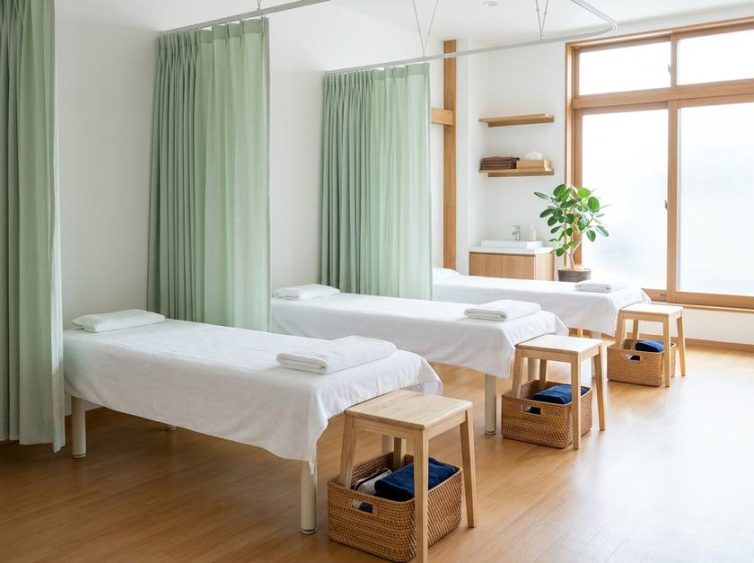
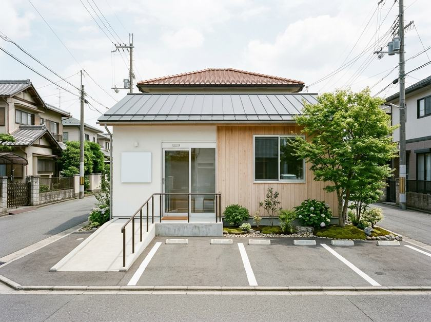

健康保険が使える場合
外傷性が明らかな骨折、脱臼、打撲、捻挫等は、医療保険の療養費支給申請の対象となります。
骨折・脱臼の患部の施術には、応急手当を除き、医師の同意が必要です。
こやぎ整骨院｜◯◯駅から歩いて5分
「これくらいで行っていいのかな」と迷ったら、どうぞそのままお越しください。お話を伺ってから、施術します。
受付時間
○＝受付 休＝休み。水曜と土曜の午後、日曜・祝日は休みです。色のついた列が今日です。
院長より
けがをしたとき、「これくらいで行っていいのかな」と迷う方は少なくありません。そんなときこそ、お気軽にご相談ください。
はじめにお話をよく伺い、施術の内容をご説明してから進めます。医療機関での検査が必要だと考えたときは、その場でお伝えします。
院長・柔道整復師（国家資格）（院長のお名前）
はじめての方へ
はじめての方は、受付からお帰りまで40分ほどみてください。
横に動かして、順にご覧ください。
{{f.n}}
{{f.v}}
健康保険証（またはマイナ保険証）をお持ちください。動きやすい服装でお越しいただくと、スムーズです。
保険と料金
外傷性が明らかな骨折、脱臼、打撲、捻挫等は、医療保険の療養費支給申請の対象となります。
骨折・脱臼の患部の施術には、応急手当を除き、医師の同意が必要です。
保険の対象にならない場合は、自費の施術となります。内容と料金は、施術の前にご説明します。
料金は税込です（見本の金額）。

院内のご案内
よくあるご質問
{{q.a}}
アクセス

ご希望をお送りいただいたあと、お電話で時間を確定します。当日のご予約は、お電話でお願いします。
ご来院
ご希望の日をお選びください。
{{closedMsg}}
時間帯
お名前をご入力ください。
お電話番号をご入力ください。
お預かりした内容は、ご予約とご連絡のためだけに使います。
{{doneLine}}お電話で時間を確定しますので、少しお待ちください。
見本のため、実際には送信されていません。